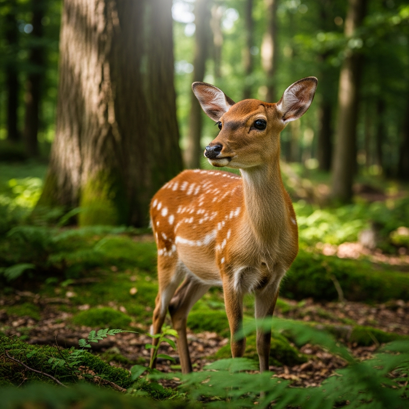

1. 呆萌水豚君Capybara
來自南美洲的水豚，是世界上體型最大的囓齒類動物。牠們性情溫和，喜歡群居，最喜歡泡在水裡發呆。在園區內，您可以近距離觀察牠們吃草和泡湯的可愛模樣，幸運的話還能看到牠們頂著橘子泡溫泉的經典畫面！

來自南美洲的水豚，是世界上體型最大的囓齒類動物。牠們性情溫和，喜歡群居，最喜歡泡在水裡發呆。在園區內，您可以近距離觀察牠們吃草和泡湯的可愛模樣，幸運的話還能看到牠們頂著橘子泡溫泉的經典畫面！

小熊貓有著紅褐色的毛皮和毛茸茸的長尾巴，主要棲息在喜馬拉雅山脈和中國西南部的森林中。牠們身手靈活，喜歡在樹枝間穿梭。每天的餵食時間是觀賞牠們最活躍姿態的最佳時機，千萬別錯過！

國王企鵝是體型第二大的企鵝，脖子和胸前的金黃色斑紋是牠們最迷人的特徵。牠們的泳姿優雅，如同水中的紳士。在專屬的低溫企鵝館中，您可以隔著玻璃欣賞牠們排隊跳水、游泳的逗趣模樣。

梅花鹿性情溫馴，身上美麗的白色斑點如同綻放的梅花。牠們適應力強，在園區特別打造的森林棲地中自由漫步。我們提供特製的鹿仙貝，讓遊客可以體驗親手餵食梅花鹿的樂趣，感受被可愛小鹿包圍的瞬間。

狐獴是一種高度社會化的動物，最為人熟知的動作就是用後腳站立、東張西望的「站崗」姿勢，十分逗趣。在狐獴區，您總是能看見一兩隻盡責的衛兵站在高處警戒，而其他同伴則在沙地裡忙碌地挖洞玩耍。

樹懶以極其緩慢的動作聞名，大部分時間都倒掛在樹枝上休息。牠們的毛髮中甚至會生長綠藻，形成天然的偽裝。放慢腳步，來熱帶雨林館尋找牠們的身影吧！看著樹懶緩慢地移動和咀嚼葉子，讓人不禁也跟著放鬆。